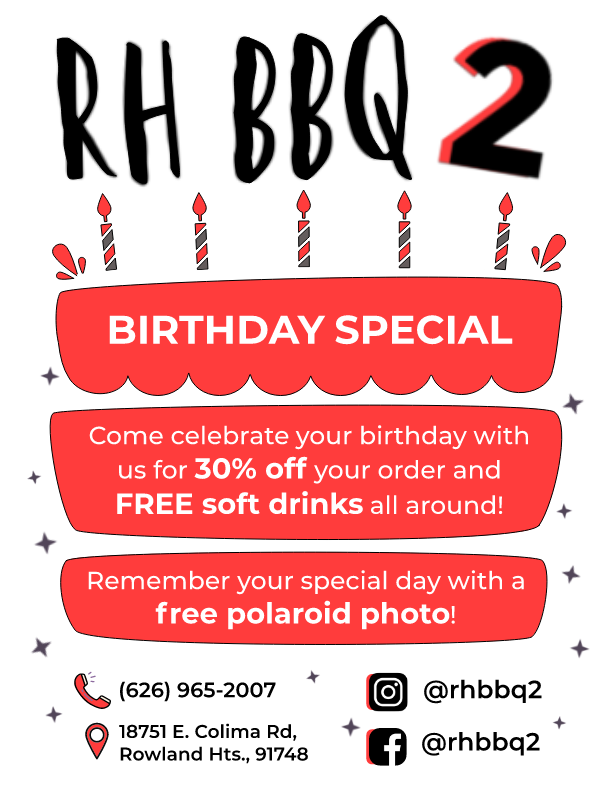

Sherry Parngs
I am a first-year student at the University of California, Riverside, currently studying as a Pre-Business major. On this academic path, I am planning to continue into the two-year Business Administration here with an ambition to graduate early. With that in mind, I will be concentrating my studies on marketing with hopes to pursue a career in the advertising field, such as becoming a marketing director.mic path
In terms of skills, I consider myself to be optimistic and intrinsically driven. When things go south, I tend to take a rational approach as a resolution, finding the silver lining to an otherwise unfortunate situation. Although this is my go-to method of approaching life, it seems to contribute to a reliable work ethic. In another light, being optimistic does not necessarily mean I ignore the worst of my circumstances; instead, failures encourage me to work harder. This, in turn, has fostered a sense of persistence within myself that I feel has enabled me to overcome personal and external hardships. These struggles include anxiety, which admittedly has hindered me since I was as young as 10. However, in an effort to conquer it, I have participated in several community-oriented organizations such as Red Cross, American Heart Association, and St. Jude. My experiences with these programs have greatly developed my communication skills as well as my ability to be a team player in ways that allowed me to serve the community. For instance, I have frequently participated in Red Cross' Sound the Alarm event, an activity I would consider as one of my favorites, prompting me and strangers across Southern California to bond as we served low-income neighborhoods with potentially life-saving necessities. These, like many other volunteering events have undoubtedly strengthened myself as a person, and I definitely carry myself as someone who has more to learn.
On another note, I have some other interests that contribute to my character as a whole. Graphic design and digital illustrating are some of my main interests, which have become deep rooted in me since I was about 12 years old. The process of learning was fairly difficult on its own, but through hundreds of hours I was able to gain experience within Adobe editing software programs such as Illustrator, InDesign, and Photoshop. I continued to pursue this hobby, spending my creativity on outlets like my Yearbook classes in seventh, eighth, and eleventh years of school. I also genuinely enjoyed my digital graphics classes in my sophomore and senior years of high school, even growing my ambitions to participate in design competitions. I would say that with these experiences, I have not only become proficient in certain design programs, but have also gained many soft and hard skills. These include but are not limited to: patience, a detail-oriented perspective, communication, cooperation, reliability, time management, creative thinking, and above average typing speed. Overall, graphic design has undoubtedly played an important role in my life for a while now, and I am certain it will continue to prove useful in business fields like marketing and sales especially.
Experience
Member
• Documented natural disaster relief forms for eligible families in low income neighborhoods
• Communicated with fellow Red Cross associates and recipients of various ages
• Tended to the needs of patients donating blood
Member
• Coordinated events to fundraise for patients at St. Jude Children's Hospital
• Managed and participated in community strengthening events
Volunteer
• Organized and replaced books
• Oversaw children's group reading sessions
• Managed and tidied workspaces
• Communicated with parents and children to ensure an appropriate environment
Education
UC Riverside
Portfolio
